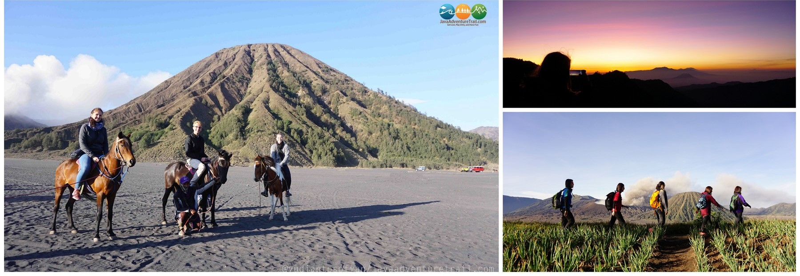

PAKET OPEN PRIVATE BROMO
Detail:
IDR 1.350.000(Non Dokumentasi)
IDR 1.550.000(Plus Dokumentasi)
IDR 1.650.000(Doc. Photo & Video)
IDR 2.550.000(Doc. Photo,Video & Drone)
Keterangan:
Bebas pilih tanggal pemberangkatan
Berangkat setiap hari
Harga Untuk 1 Grup
Paket max. untuk 2-6 orang peserta trip
Diskon IDR 200.000 (Meet Point Basecamp Jeep)
Lokasi Basecamp 15-30 menit dari pusat Kota Malang
Destinasi:
Sunrise Point,Bukit Widodaren,Gunung Batok, Pura Luhur Poten,
Kawah Bromo,Pasir Bersisik,Bukit Teletubies,Bukit Savana
Fasilitas:
Mobil antar jemput PP Kota Malang
Jeep Hardtop Bromo
Harga sudah termasuk BBM, Parkir, dan Retribusi
Guide Lokal
Photographer (Paket Plus Dokumentasi)
Videographer (Paket Plus Doc Photo & Video)
Unit Drone (Paket Plus Drone)
PilotDrone (Paket Plus Drone)
Photo Unlimited sepuasnya (Paket Plus Dokumentasi)
Share All Photo Files
Rumah Transit
Tiket Wisata Semua Destinasi